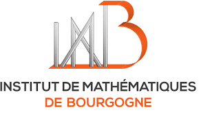
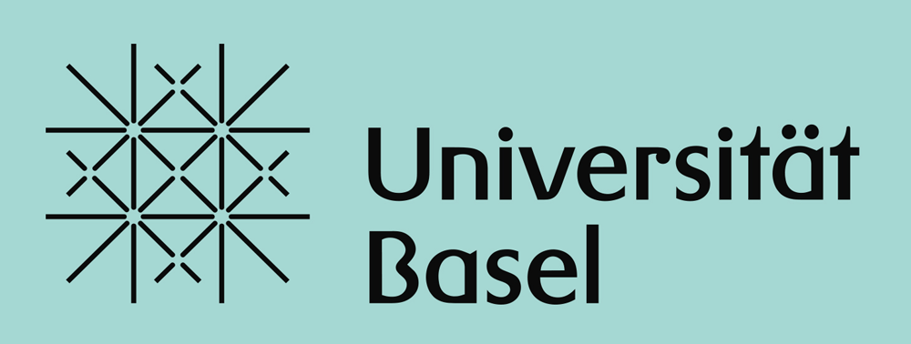
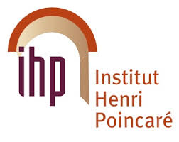
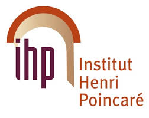
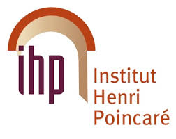

Institut de Mathématiques de Bourgogne
Institut Henri Poincaré (CNRS)
Swiss Academy of Sciences
Swiss doctoral program
Swiss mathematical society
LAREMA
University of Basel



 

8 -12 January 2018, in Charmey
(near Gruyères, Fribourg, Switzerland)
|
Olivier DEBARRE |
On K3 surfaces and hyperkähler manifolds |
| Ilia ITENBERG | Topology of real algebraic varieties |
|
Ariyan JAVANPEYKAR |
Hyperbolicity of moduli spaces |
|
Monday January 8 |
Tuesday January 9 |
Wednesday January 10 |
Thursday January 11 |
Friday January 12 |
| 12h30 welcome |
breakfast 8h45-9h45 mini-course 1 10h15-11h15 mini-course 2 11h45-12h45 mini-course 3 |
breakfast 8h45-9h45 mini-course 1 10h15-11h15 mini-course 2 11h45-12h45 mini-course 3 |
breakfast 8h45-9h45 mini-course 1 10h15-11h15 mini-course 2 11h45-12h45 mini-course 3 |
breakfast 8h45-9h45 mini-course 1 10h-11h mini-course 2 11h15-12h15 mini-course 3 |
| lunch | lunch | lunch | lunch | |
|
14h30-15h30 mini-course 1 15h45-16h45 mini-course 2 17h15-18h15 mini-course 3 18h30-19h20 talk (Pelletier) dinner |
time for discussion / enjoying the mountain side 17h20-18h10 talk (Caradot) 18h30-19h20 talk (Floris) dinner |
time for discussion / enjoying the mountain side 17h20-18h10 talk (Dejoncheere) 18h30-19h20 talk (Fanelli) dinner |
time for discussion / enjoying the mountain side 17h20-18h10 talk(Schmidt) 18h30-19h20 (Barroero) dinner |
VIVA GRUYERE Charmey, Rte des Arses 4, 1637 Charmey
The journey to Charmey is 2h10 from Geneva, 2h30 from Basel/Zürich, 1h30 from Lausanne.
See timetables on www.cff.ch, the bus stop is "Charmey (Gruyère), Le Chêne". The place is very close to the bus stop.
|
| |
|
The aim of this mini-course is to study various aspects of complex K3 surfaces (named by André Weil "because of Kummer, Kähler, Kodaira and the beautiful mountain K2 in Kashmir"). These surfaces are central in the classification of surfaces: special enough to be partially accessible to geometric descriptions (Mukai's classification) but diverse enough to enjoy intriguing (geometric, dynamic, arithmetic) properties, not all understood. If time permits, I will explain how these properties generalize in higher dimensions to hyperkähler manifolds. Here are the main topics that I plan to cover: 1) Definition of K3 surfaces and first properties 2) Linear systems on K3 surfaces 3) The Torelli theorem for K3 surfaces 4) Automorphisms of K3 surfaces 5) Hyperkähler manifolds lecture notes | |
|
| |
|
In this mini-course, we will mainly study algebraic curves in the real projective plane
and algebraic surfaces in the 3-dimensional real projective space.
Questions concerning the topology of these curves and surfaces were included by D. Hilbert in the 16-th problem of his list.
We will discuss classical restrictions on the topology of real algebraic varieties,
various constructions of these varieties (in particular, we will present
Viro's patchworking, a construction directly related to tropical geometry),
and certain real enumerative problems.
| |
|
| |
|
What is a hyperbolic algebraic variety? In this mini-course we will answer this question by
presenting several examples motivated by the Lang-Vojta and Green-Griffiths conjectures.
We will slowly work our way towards proving the Lang-Vojta
conjecture for the moduli space of curves of genus at least two, after Arakelov-Parshin (70's) and Faltings (1983).
| |
|
| |
|
In this talk we will present a generalization of a construction of the semiuniversal deformations of the simple singularities of homogeneous types A, D, and E, to the inhomogeneous types B, C, F and G. By studying the representation space of a quiver defined from a simple homogeneous singularity via the McKay correspondence, and by incorporating the action of the symmetry group of the Dynkin diagram associated to the aforementioned singularity, we can explicitly compute the semiuniversal deformation of the associated singularity of inhomogeneous type. The fibers of this deformation are all equipped with an induced action from the symmetry group. By quotienting we obtain a deformation of another simple homogeneous singularity. We will present an attempt to classify the singular configurations appearing in the fibers of this new deformation using sub-root systems of root systems of types D and E.
| |
|
| |
|
In this talk, we will look at complex flag varieties G/P acted on by a compatible torus through the scope of Geometric Invariant Theory. More precisely, after motivation the problem, we will give an expression of the set of unstable points relatively to an ample line bundle linearized for this action. We will focus in particular in the case of a maximal parabolic subgroup P, where this expression is much easier to manipulate.
| |
|
| |
|
In this talk, I will discuss some pathologies for the generic fibre
of del Pezzo fibrations in characteristic p>0, motivated by the recent
developments of the MMP in positive characteristic. The main application
of the joint work with Stefan Schröer concerns 3-dimensional Mori fibre spaces.
|
|
|
The Cremona group Cr_n is the group of birational transformations of |P^n into itself.
If n=2, by the Noether-Castelnuovo theorem, the group Cr_2 is generated by PGL_3 and by the Cremona involution.
The subgroups of Cr_3 have been classified by Umemura and there is a program of classification using birational methods pursued by Blanc-Fanelli-Terpereau.
In this talk, we will present some examples of maximal algebraic subgroups of Cr_4.
It is a work in progress in collaboration with Jérémy Blanc.
|
|
|
The Kronecker coefficients are a specific example of a very natural problem in representation theory: how does the tensor product of two irreducible representations of a given group behave? In particular, when the representations of the group considered are all semisimple, the question is then to determine how this tensor product will decompose as a direct sum of irreducible. When one looks at this problem for the symmetric group on a finite set, it gives rise to the Kronecker coefficients.
A remarkable fact is that these coefficients can also be expressed in terms of representations of connected complex reductive groups. As a consequence, a more geometric expression can be given: they correspond to the dimensions of some spaces of sections (invariant under the action of some reductive group) of line bundles on some quite simple projective algebraic varieties (namely some products of flag varieties).
This geometric point of view allows to study some properties of the Kronecker coefficients, and we will be interested in particular in some stability properties: in 2014, J. Stembridge defined a notion of "stable triples" which generalises a property of the Kronecker coefficients first observed in the 1930s by F. Murnaghan. These notions will of course all be defined in the talk, and we will see how the geometric expression of those coefficients can allow to obtain new results on this topic, for instance using notions coming from Geometric Invariant Theory.
| |
|
| |
|
The j-invariant is an important and well-studied function.
It parametrizes elliptic curves over the complex numbers. We prove that
there are only finitely many j-invariants that are algebraic units in a
fixed isogeny orbit of elliptic curves. We start by introducing basic
concepts, developing the machinery needed and then state the results
| |
|
| |
|
Two varieties whose dimensions do not sum up to at least the dimension of the ambient space should not intersect. This is the guiding philosophy that led several authors to propose conjectures about subvarieties of commutative algebraic groups and of Shimura varieties.
After a brief historic introduction we will talk about results for curves in families of abelian varieties, mostly obtained in collaboration with Laura Capuano.
| |
Charles Arnal (Paris)
Emmi Arvidsson (EPFL)
Fabrizio Barroero (Basel)
Rémi Bignalet-Cazalet (Dijon)
Cinzia Bisi (Ferrara)
Jérémy Blanc (Basel)
Thomas Blomme (Paris)
Pierre Le Boudec (Basel)
Elena Bunkova (Moscow)
Alberto Calabri (Ferrara)
Jung Kyu Canci (Basel)
Antoine Caradot (Lyon)
Olivier Debarre (Paris)
Benoît Dejoncheere (Lyon)
Gabriel Dill (Basel)
Adrien Dubouloz (Dijon)
Andrea Fanelli (Düsseldorf)
Enrica Floris (Poitiers)
Linda Frey (Basel)
Jean-Philippe Furter (La Rochelle)
Philipp Habegger (Basel)
Isac Heden (Kyoto)
Mattias Hemmig (Basel)
Ilia Itenberg (Paris)
Ariyan Javanpeykar (Mainz)
Igor Krylov (Bayreuth)
Philipp Licht (Mainz)
Anne Lonjou (Basel)
Frédéric Mangolte (Angers)
Lucy Moser-Jauslin (Dijon)
Maxime Pelletier (Lyon)
Joachim Petit (Basel)
Pierre-Marie Poloni (Bern)
Quentin Posva (EPFL)
Andriy Regeta (Köln)
Julia Schneider (Basel)
Stefan Schmid (Basel)
Ursina Schweizer (EPFL)
Aline Steiner (Basel)
Ronan Terpereau (Dijon)
Christian Urech (Basel)
Immanuel van Santen (Basel)
Francesco Veneziano (Basel)
Nivedita Viswanathan (Nottingham)
Egor Yasinsky (Moskow)
Susanna Zimmermann (Angers)
The registration is closed.
Philipp Habegger (University of Basel)
Ronan Terpereau (University of Burgundy)
Susanna Zimmermann (University of Angers)
Here are the previous ones:
1st, 2nd , 3rd, 4th, 5th, 6th swiss-french workshop in Algebraic Geometry
